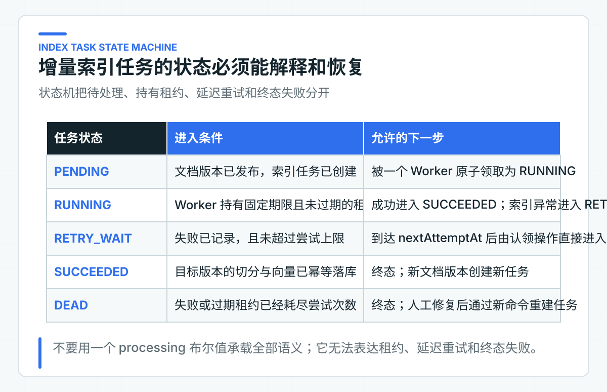
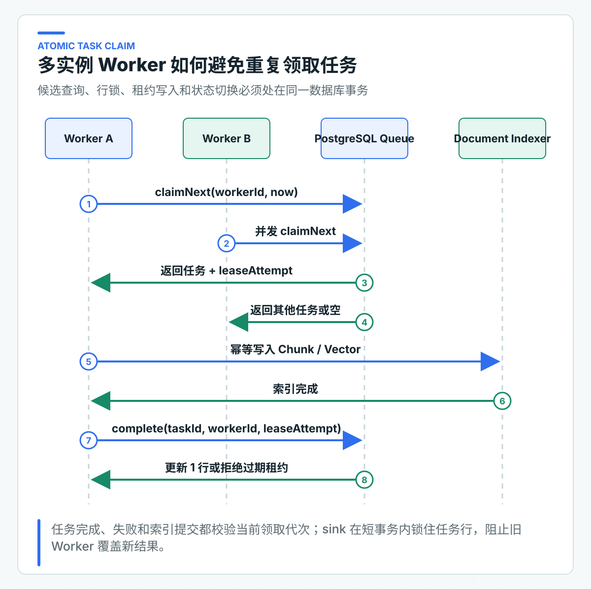

增量索引为什么需要任务、租约和失败恢复
运营同学刚发布一版退款政策，后台显示成功，用户却仍然搜不到。排查后可能发现，原文件已经保存，切分完成了一半，Embedding 调用遇到限流，应用恰好又重启了。
从上传到可检索，中间还有解析、切分、Embedding、Chunk 与向量写入，以及旧索引切换。把它们都塞进 HTTP 请求，接口延迟会被最慢的外部依赖拖住；只扔进线程池，进程消失后又没有恢复依据。
因此，增量索引需要一条可以查询和重试的任务记录。任务绑定确定的文档版本，租约标识当前后台执行进程（Worker），幂等写入保证重复执行不会产生重复 Chunk。这样才能解释“处理到哪一步了”，也能在失败后继续完成。
任务处理由 IndexTask 状态机、IndexTaskWorker、JDBC 队列，以及原子认领与租约代次校验 SQL 组成。DocumentVersionIndexingService 负责确定性切分和批量 Embedding，PgVectorKnowledgeChunkIndexSink 负责事务写入与检索版本切换。
先把索引建模成可恢复任务
同步方案最直观：上传文档后立即解析、切分、调用 Embedding，再把向量写进数据库，全部成功才向调用方返回。它在本地样例里很好理解，放进公司业务系统后会产生几个难以接受的耦合。
首先，上传接口继承了模型服务的延迟与可用性。一个几十页的文档可能产生数百个 Chunk，需要多批 Embedding 请求。Provider 出现限流时，用户看到的是上传超时；实际上原文件可能已经保存，文档版本也已经创建，只有索引没有完成。调用方重试上传，又可能创建重复对象或重复版本。
其次，HTTP 请求不是可靠的任务容器。网关超时、客户端断开、Pod 重启都可能发生在索引中间。进程内 CompletableFuture 或线程池只能把工作移出请求线程，不能在进程消失后保存进度。没有持久化任务记录，运维只能从日志猜测哪些版本需要补偿。
第三个问题是发布与可检索并非同一个状态。文档领域关心内容版本、审批和生效时间，索引领域关心某个版本是否已经按指定切分策略与 Embedding 模型生成检索数据。把两者压成一个 published=true，会让业务页面无法解释“文档已发布但索引仍在处理”以及“新索引失败时是否继续使用旧版本”。
更稳妥的边界是：文档发布事务只负责确认不可变版本，并创建一条持久化索引任务；Worker 在事务外调用解析器和模型，完成后再提交任务结果。文档与任务位于同一个数据库时，版本发布与任务创建可以放在一个本地事务中，不必为了异步而先引入消息中间件。若任务要通过消息总线分发，再使用事务发件箱（Outbox）保证数据库事实和事件一致。
项目把业务发布版本和检索版本分开保存。PUBLISHED 表示内容已经完成业务发布，document_search_version 表示查询当前读取哪一版完整索引。替换版本仍在处理时，读取继续使用上一版索引；首次发布没有旧版可回退，要等第一条索引任务成功。
任务绑定不可变文档版本
索引任务不能只记录一个文件地址。文件可能被覆盖，文档可能发布新版本，Embedding 模型也可能升级。Worker 如果每次都“读取最新内容”，同一任务重试两次就可能处理两份不同文本，结果无法复现。
index_task 表使用下面的业务唯一约束：
UNIQUE (tenant_id, document_id, version_number, task_type)
完整表结构见 V1__knowledge_platform.sql。tenant_id 保证多租户隔离，document_id + version_number 指向不可变版本，task_type 允许同一版本分别执行建索引、重建索引或其他受控任务。重复收到“为退款政策第 2 版建索引”的命令时，数据库唯一键只保留同一个业务任务，不会生成两批相同向量。
任务 ID 与业务幂等键承担不同职责。task_id 用于定位一次任务记录；业务唯一键用于判断两个请求是否在表达同一项工作。只拿随机 UUID 做去重没有意义，因为每次重试都会得到一个新 UUID。
任务还要保留 attempts、lease_owner、lease_until、next_attempt_at、error_code、created_at 和 updated_at。每个字段都对应一个运行问题：任务尝试过几次，是否有人正在处理，租约是否已经失效，下次何时允许领取，以及最近一次失败发生在解析、Embedding 还是向量写入。
状态机记录完整处理结果
一个 processing 布尔值只能区分“正在处理”和“没有处理”。Worker 崩溃后，它会永远停在 true；任务等待限流退避时，它又只能写回 false，与从未开始的任务无法区分。任务队列需要显式状态机。

任务状态机使用五个状态：
| 代码状态 | 语义 | 可以发生的转换 |
|---|---|---|
PENDING |
新任务已经创建，达到执行时间后可以领取 | RUNNING |
RUNNING |
某个 Worker 持有未过期租约 | SUCCEEDED、RETRY_WAIT、DEAD |
RETRY_WAIT |
可恢复失败已经记录，等待退避时间 | 到期后由认领操作直接进入 RUNNING |
SUCCEEDED |
目标版本已经完成索引 | 终态 |
DEAD |
失败或过期租约已经耗尽尝试次数 | 终态，人工处理后创建新的受控任务 |
IndexTask 在 RETRY_WAIT 到期后不会先改回 PENDING，下一次认领会直接把它切换为 RUNNING。数据库队列使用相同语义，不存在图外的中间状态。
claim 每成功一次就增加 attempts，并写入租约所有者和截止时间：
status = IndexTaskStatus.RUNNING;
attempts += 1;
leaseOwner = workerId;
leaseUntil = now.plus(leaseDuration);
updatedAt = now;
失败时不能只保存异常消息。异常文本会随 SDK、语言与实现变化，不适合统计和自动决策。IndexingException 提供稳定 errorCode，例如 EMBEDDING_TIMEOUT、UNSUPPORTED_DOCUMENT。任务表可以另外保存脱敏后的 error_message 供排查，但重试策略应依赖稳定错误分类，而不是对异常字符串做包含判断。
用租约协调多实例 Worker
多实例部署下，两个 Worker 可能同时看到同一条到期任务。简单执行“先查一条 PENDING，再 UPDATE”为 RUNNING，会留下竞态窗口：两边都查到同一条记录，然后都开始调用 Embedding。用 JVM 锁没有用，因为两个 Worker 不在同一进程。
租约的含义是：Worker 在一段有限时间内拥有完成或报告失败的权利。它不是永久锁。租约到期后，系统推断原 Worker 已失联，允许另一个实例接管任务。这样即使进程被杀、机器断电或网络分区，任务也不会永远卡住。

领取必须在数据库里原子完成。PostgresIndexTaskClaimQuery 使用一个 CTE 完成候选选择和状态更新：
WITH exhausted AS (
UPDATE index_task
SET status = 'DEAD',
lease_owner = NULL,
lease_until = NULL,
error_code = COALESCE(error_code, 'LEASE_ATTEMPTS_EXHAUSTED'),
updated_at = ?
WHERE status = 'RUNNING'
AND attempts >= ?
AND lease_until <= ?
RETURNING task_id
),
candidate AS (
SELECT task_id
FROM index_task
WHERE status IN ('PENDING', 'RETRY_WAIT', 'RUNNING')
AND attempts < ?
AND (
(status IN ('PENDING', 'RETRY_WAIT') AND next_attempt_at <= ?)
OR (status = 'RUNNING' AND lease_until <= ?)
)
ORDER BY next_attempt_at, created_at, task_id
FOR UPDATE SKIP LOCKED
LIMIT 1
)
UPDATE index_task task
SET status = 'RUNNING',
attempts = task.attempts + 1,
lease_owner = ?,
lease_until = ?,
updated_at = ?
FROM candidate
WHERE task.task_id = candidate.task_id
RETURNING task.*
exhausted 先把租约已经过期且尝试预算耗尽的任务置为 DEAD，避免它被无限接管。FOR UPDATE 锁住候选行，SKIP LOCKED 让其他 Worker 跳过已经被领取的任务，继续寻找下一条，而不是排队等待同一行。UPDATE ... RETURNING 把状态切换和任务返回放在同一个事务里。只有拿到返回记录的 Worker 才能执行索引。
SKIP LOCKED 解决并发吞吐，不自动解决公平性。排序字段决定任务优先级；长时间失败、不断到期的旧任务可能挤占新任务，某些高优先级租户又可能需要独立队列。公司项目应根据业务设置优先级、分片或配额，并观察最老待处理任务的年龄，而不是只看队列总数。
还有一条容易写错：数据库行锁不能覆盖整个 Embedding 调用。若 Worker 在持有事务和行锁时请求外部模型，几十秒的网络等待会占用连接与锁，吞吐很快崩掉。正确做法是短事务领取并提交，随后在事务外执行索引，再用另一个短事务完成或失败任务。租约负责跨越这段无数据库锁的执行时间。
提交结果前再次校验租约所有权
设想 Worker A 获得 45 秒租约，处理时发生长时间暂停；45 秒后 Worker B 接管并完成任务。A 随后恢复，如果它仍能无条件写 SUCCEEDED，就会覆盖 B 的结果，甚至在 B 已经依据新配置重建向量后写回旧数据。
因此 complete 与 fail 都必须证明调用者仍拥有有效租约。IndexTask 会检查状态、workerId 和 leaseUntil：
if (status != IndexTaskStatus.RUNNING || !workerId.equals(leaseOwner)) {
throw new IndexTaskLeaseOwnershipException(workerId, leaseOwner);
}
if (leaseUntil == null || !leaseUntil.isAfter(now)) {
throw new IndexTaskLeaseOwnershipException(workerId, leaseOwner);
}
JDBC 队列还把本次领取后的 attempts 返回为 leaseAttempt，作为这次租约的代次。完成和失败 SQL 同时校验 workerId、leaseAttempt 与 leaseUntil，更新行数不是 1 就抛出 IndexTaskLeaseLostException。
即使同一个 workerId 被重启后的进程复用，旧代次也不能覆盖新代次写入的任务状态。这种防止旧执行者覆盖新结果的做法，通常称为租约代次校验（fencing）。
任务状态受保护，不等于索引数据自动受保护。ClaimedIndexTask 会把 leaseAttempt 传给 KnowledgeChunkIndexSink。pgvector 适配器在短事务开始时按 taskId + leaseAttempt 锁住当前任务行，并再次检查状态与租约。校验通过后才写分块和切换检索版本；失去租约的旧 Worker 在写入前就会失败。
当前 Worker 会在一个租期的三分之一处开始周期续租。续租 SQL 与完成、失败 SQL 使用同一组 fencing 条件：任务仍为 RUNNING、Worker 匹配、leaseAttempt 匹配、旧租约尚未过期。任一条件失效，续租就不能修改当前任务。
心跳解决的是正常长任务续租，不是让已失联的 Worker 无限占有任务。如果数据库异常导致续租不确定，最终的完成或失败 SQL 仍会重新校验所有权。返回 LOST_LEASE 时，旧 Worker 停止终态写入，任务由当前持有者继续处理或在租期后被接管。
Worker 只编排任务步骤
IndexTaskWorker 的 runOnce 保持了很窄的职责：领取一条任务，调用 DocumentVersionIndexer，成功后完成任务，可分类的索引异常则记录失败策略。
private IndexTaskRunResult runClaimed(Optional<ClaimedIndexTask> claimed) {
if (claimed.isEmpty()) return IndexTaskRunResult.IDLE;
ClaimedIndexTask task = claimed.orElseThrow();
LeaseHeartbeat heartbeat = new LeaseHeartbeat(task);
heartbeat.start();
try {
indexer.index(task);
heartbeat.close();
if (heartbeat.leaseLost()) return IndexTaskRunResult.LOST_LEASE;
taskQueue.complete(
task.taskId(), workerId, task.leaseAttempt(), clock.get());
return IndexTaskRunResult.SUCCEEDED;
} catch (IndexingException error) {
heartbeat.close();
if (heartbeat.leaseLost()) return IndexTaskRunResult.LOST_LEASE;
try {
taskQueue.fail(task.taskId(), workerId, task.leaseAttempt(),
clock.get(), error.errorCode(), retryDelay, maximumAttempts);
return IndexTaskRunResult.FAILED;
} catch (IndexTaskLeaseLostException leaseLost) {
return IndexTaskRunResult.LOST_LEASE;
}
} finally {
heartbeat.close();
}
}
上面的片段省略了失败写入细节。可预期的解析失败、Provider 限流和外部超时，需要在 DocumentVersionIndexer 边界转换成稳定错误码。失败写入如果被 fencing 拒绝，返回 LOST_LEASE；NullPointerException、数据库映射错误等编程缺陷不会被统一包装成“稍后重试”，避免任务反复消耗资源却隐藏真正缺陷。
实际 Worker 进程仍需要最外层的运行保护：记录未处理异常、让租约自然过期、触发告警，并保证调度线程不会永久死亡。这个保护属于运行容器，不应改变领域错误分类。当前最小实现对 IndexingException 使用统一的固定退避和最大尝试次数；公司项目若要让不可恢复错误直接进入终态，应显式扩展错误策略，不能只靠错误消息猜测。
runOnce 返回 IDLE、SUCCEEDED、FAILED 或 LOST_LEASE。空队列时可以退避，连续成功时可以立即领取下一条，失败时由任务的 nextAttemptAt 控制重试。LOST_LEASE 不能再用旧租约记录一次 FAILED，否则会让丢失所有权的 Worker 再次修改任务。
让重复执行得到同一索引结果
租约意味着系统采用至少一次执行语义。Worker A 可能已经把全部向量写入数据库，但在提交 SUCCEEDED 前宕机；租约到期后 Worker B 会再次执行同一任务。任何声称分布式索引“恰好一次”的设计，最终都要面对这个窗口。
工程目标应当是让重复执行得到同一业务结果，因为分布式链路无法消除所有重复窗口。向量写入的幂等键至少应包含：
tenantId + documentId + documentVersion + chunkId
如果同一个文档版本允许使用不同 Embedding 模型并行迁移，还要加入 embeddingModel 或 indexVersion。切分阶段已经让 chunkId 由版本、切分策略、顺序、标题路径和内容摘要稳定生成。同一版本按同一策略重跑时，可以执行 UPSERT，也可以先写新索引版本再原子切换。不要每次重跑都追加一行。
删除旧数据也要有版本边界。不要在新版本第一批向量写入前就删除旧版本，否则中途失败会让线上没有可用索引。项目让不同文档版本使用不同的 Chunk 行，全部 Embedding 完成后，sink 在一个短事务中写入目标版本并更新 document_search_version。中途失败时事务回滚，查询指针仍指向上一版。当前代码没有实现旧版本清理任务；公司接入时应在回退窗口结束后再清理旧分块，并保留正在被引用或审计的版本。
这套实现优先保证已有知识可用，因此新索引长期失败时会继续返回旧版。公司必须给“业务版本与检索版本不一致”设置最长允许时间和告警。法规、价格或权限敏感内容不能接受继续返回旧版时，应改成先构建索引、再原子发布；或者在新版本就绪前明确拒答。
恢复策略应先分类失败：
| 失败类型 | 示例 | 处理方式 |
|---|---|---|
| 瞬时依赖失败 | Provider 超时、限流、短暂网络错误 | 指数退避并增加随机抖动，有限重试 |
| 输入不可处理 | 不支持的格式、解码失败、文档损坏 | 直接终态，提示内容维护人员修复源文件 |
| 配置或兼容错误 | 向量维度不匹配、模型名无效、数据库迁移缺失 | 阻断同类任务并告警，不让每条任务重复撞错 |
| Worker 失联 | 进程退出、节点故障、长时间停顿 | 租约到期后由其他 Worker 接管 |
当前领域模型使用固定 retryDelay 和最大尝试次数，便于把状态转换写清楚。公司项目可以把退避计算放入策略对象，例如 baseDelay * 2^(attempts-1)，再增加上限与随机抖动，避免大量任务同时恢复造成惊群。重试参数应按错误类型区分；损坏文件重试十次不会变好，限流错误立即重试又会进一步放大流量。
Embedding 批次兼顾吞吐与一致性
逐 Chunk 调用 Embedding Provider 会把一次文档索引放大成大量网络往返；把几百个 Chunk 一次性提交，又可能超过 Provider 的批量上限、请求体限制或单次超时预算。批次大小应作为 Worker 配置，而不是写死在循环里，并结合文档规模、向量维度、Provider 限流和连接池容量压测。
DocumentVersionIndexingService 按 embeddingBatchSize 切分请求。每批文本通过 KnowledgeEmbeddingModel.embedAll 一次提交。
SpringAiKnowledgeEmbeddingModel 还会校验返回数量、结果索引、模型元数据和向量维度。批次少一个向量、索引重复或中途换模型，都不能继续写库。
同一任务的所有批次必须使用同一个 Embedding 模型和维度。同一文档版本若前半批使用 embedding-v1、后半批使用 embedding-v2，即使维度相同，距离空间也可能不兼容。当前实现发现模型名变化会终止任务，由失败恢复流程处理；模型迁移应建立独立索引版本，完成整批验证后再切换可见版本。
批量 Embedding 完成前不持有数据库行锁，所有批次完成后才调用 replaceVersion。当前 pgvector 适配器把任务租约校验、目标版本分块写入和检索指针切换放在同一个短事务里，不能让前两个批次成功、第三个批次失败后留下半份可见索引。
通过发布接口走一遍索引任务
第 14 篇上传接口返回 documentId、versionNumber 和最新 revision。发布时使用这个 revision，并同时提交文档级 READ ACL：
rag-learning-journey.http 会发布两份文档，并调用 Worker 两次。06-index-first-document 与 07-index-second-document 都应返回 SUCCEEDED。随后执行 11-idempotent-worker-observation，结果应为 IDLE。
若出现 FAILED 或 LOST_LEASE，就根据响应中的任务结果回到上面的状态机定位：是 Provider 失败、租约已经丢失，还是任务进入了下一次退避。发布接口返回 202 Accepted、新的 revision 和 indexTaskId；在 JDBC 实现中，业务版本、ACL 和 PENDING 任务在同一个数据库事务中提交。
阶段 03 已把发布、手动触发 Worker 和重复触发写进同一个 .http 文件，macOS 与 Windows 都可以直接在 IDEA 中运行，不需要在三套命令之间切换。完整配置和结果核对 SQL 见 知识写入运行手册。
从任务年龄和结果观察积压
队列长度不是唯一指标。100 条刚创建的任务可能完全正常，1 条等待两小时的高优先级政策任务却可能已经影响用户。任务观测至少需要以下维度：
- 到期可领取任务数，以及最老任务等待时间；
RUNNING数量、租约即将到期和已经过期的数量；- 各低基数
errorCode的失败次数、重试次数和终态数量； - 从文档发布到索引成功的端到端延迟分位数；
- 每个任务的 Chunk 数、Embedding 批次数和向量写入耗时；
- 当前检索版本与当前有效业务版本是否一致。
taskId、documentId 和租户不适合放进指标标签，它们会制造高基数。单任务排查通过调用链、结构化日志或受控查询完成，聚合指标只保留任务类型、结果、错误类别和 Worker 池等稳定维度。
告警也要与业务影响绑定。短暂积压可以观察；最老任务超过服务目标、终态失败持续增加、过期租约异常增多，才需要通知。文档发布页面最好直接展示 INDEXING、SEARCHABLE 和失败原因摘要，让内容维护人员不用翻运维日志判断政策是否已经对用户生效。
从故障现象判断恢复边界
读代码时抓住三条规则即可。IndexTask 决定合法状态转换。IndexTaskWorker 只编排领取、续租、索引与终态。PgVectorKnowledgeChunkIndexSink 在短事务里校验租约代次、写入完整目标版本并切换检索指针。
重复触发后返回 IDLE，说明同一业务任务没有被再次创建；旧 Worker 返回 LOST_LEASE，说明它不能覆盖新持有者；索引批次失败后旧检索版本仍可用，说明半份新索引没有暴露给查询。进入目标 PostgreSQL 环境后，再用两个 Worker 同时领取到期任务，观察同一任务是否只被一个连接拿到，以及过期租约能否由另一个连接接管。
接入现有任务系统时保留的规则
可以复用的规则很具体：任务绑定不可变文档版本，发布与任务创建保持一致，领取通过数据库原子更新完成。执行期间只持有有限租约，完成与失败必须校验所有权。重试建立在幂等索引写入上，终态失败可以查询并转人工处理。调度框架只负责触发执行。
需要按公司环境替换的部分包括调度入口、Embedding 批大小与限流策略、向量库写入、心跳策略和告警平台。已有 XXL-JOB、Kubernetes CronJob 或内部任务平台时，可以让它们周期性调用 runOnce，但不要把任务状态只存在调度平台里。索引任务状态仍应由知识服务自己的数据库保存，避免换调度器时丢失恢复语义。
迁移时可以复用 JDBC Queue 的原子领取、续租与租约代次校验，sink 的事务切换，以及 DocumentVersionIndexer 对相同输入生成相同索引结果的要求。调度周期、租期、续租频率、公司对象存储和长文档检查点，则要根据目标调度平台、Provider 超时、向量策略和文档规模调整。
增量索引稳定后，几次成功查询仍然不能代表 RAG 质量。切分策略、Embedding、TopK、混合检索和重排（Rerank）每改一项，都可能让一部分问题变好、另一部分问题变差。下一步需要把“搜得准”变成可重复计算的指标，并把每个失败样例定位到具体链路。